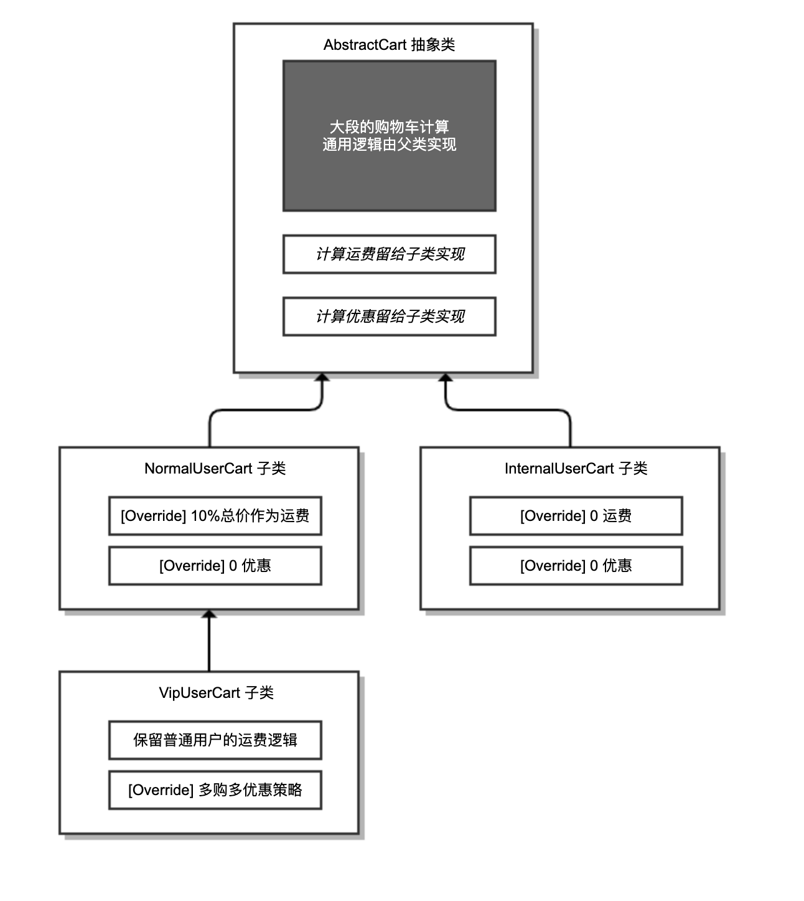
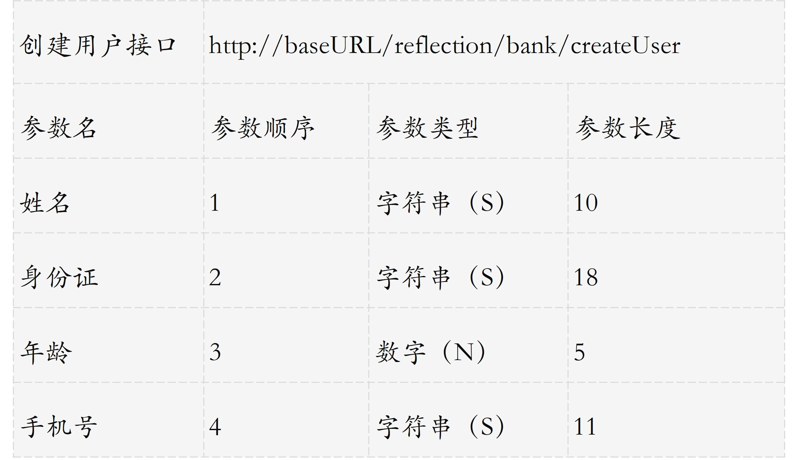
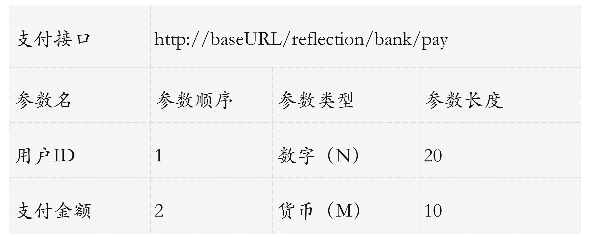

- 00 开篇词 业务代码真的会有这么多坑？.md.html
- 01 使用了并发工具类库，线程安全就高枕无忧了吗？.md.html
- 02 代码加锁：不要让“锁”事成为烦心事.md.html
- 03 线程池：业务代码最常用也最容易犯错的组件.md.html
- 04 连接池：别让连接池帮了倒忙.md.html
- 05 HTTP调用：你考虑到超时、重试、并发了吗？.md.html
- 06 2成的业务代码的Spring声明式事务，可能都没处理正确.md.html
- 07 数据库索引：索引并不是万能药.md.html
- 08 判等问题：程序里如何确定你就是你？.md.html
- 09 数值计算：注意精度、舍入和溢出问题.md.html
- 10 集合类：坑满地的List列表操作.md.html
- 11 空值处理：分不清楚的null和恼人的空指针.md.html
- 12 异常处理：别让自己在出问题的时候变为瞎子.md.html
- 13 日志：日志记录真没你想象的那么简单.md.html
- 14 文件IO：实现高效正确的文件读写并非易事.md.html
- 15 序列化：一来一回你还是原来的你吗？.md.html
- 16 用好Java 8的日期时间类，少踩一些“老三样”的坑.md.html
- 17 别以为“自动挡”就不可能出现OOM.md.html
- 18 当反射、注解和泛型遇到OOP时，会有哪些坑？.md.html
- 19 Spring框架：IoC和AOP是扩展的核心.md.html
- 20 Spring框架：框架帮我们做了很多工作也带来了复杂度.md.html
- 21 代码重复：搞定代码重复的三个绝招.md.html
- 22 接口设计：系统间对话的语言，一定要统一.md.html
- 23 缓存设计：缓存可以锦上添花也可以落井下石.md.html
- 24 业务代码写完，就意味着生产就绪了？.md.html
- 25 异步处理好用，但非常容易用错.md.html
- 26 数据存储：NoSQL与RDBMS如何取长补短、相辅相成？.md.html
- 27 数据源头：任何客户端的东西都不可信任.md.html
- 28 安全兜底：涉及钱时，必须考虑防刷、限量和防重.md.html
- 29 数据和代码：数据就是数据，代码就是代码.md.html
- 30 如何正确保存和传输敏感数据？.md.html
- 31 加餐1：带你吃透课程中Java 8的那些重要知识点（一）.md.html
- 32 加餐2：带你吃透课程中Java 8的那些重要知识点（二）.md.html
- 33 加餐3：定位应用问题，排错套路很重要.md.html
- 34 加餐4：分析定位Java问题，一定要用好这些工具（一）.md.html
- 35 加餐5：分析定位Java问题，一定要用好这些工具（二）.md.html
- 36 加餐6：这15年来，我是如何在工作中学习技术和英语的？.md.html
- 37 加餐7：程序员成长28计.md.html
- 38 加餐8：Java程序从虚拟机迁移到Kubernetes的一些坑.md.html
- 答疑篇：代码篇思考题集锦（一）.md.html
- 答疑篇：代码篇思考题集锦（三）.md.html
- 答疑篇：代码篇思考题集锦（二）.md.html
- 答疑篇：加餐篇思考题答案合集.md.html
- 答疑篇：安全篇思考题答案合集.md.html
- 答疑篇：设计篇思考题答案合集.md.html
- 结束语 写代码时，如何才能尽量避免踩坑？.md.html
21 代码重复：搞定代码重复的三个绝招
你好，我是朱晔。今天，我来和你聊聊搞定代码重复的三个绝招。
业务同学抱怨业务开发没有技术含量，用不到设计模式、Java 高级特性、OOP，平时写代码都在堆 CRUD，个人成长无从谈起。每次面试官问到“请说说平时常用的设计模式”，都只能答单例模式，因为其他设计模式的确是听过但没用过；对于反射、注解之类的高级特性，也只是知道它们在写框架的时候非常常用，但自己又不写框架代码，没有用武之地。
其实，我认为不是这样的。设计模式、OOP 是前辈们在大型项目中积累下来的经验，通过这些方法论来改善大型项目的可维护性。反射、注解、泛型等高级特性在框架中大量使用的原因是，框架往往需要以同一套算法来应对不同的数据结构，而这些特性可以帮助减少重复代码，提升项目可维护性。
在我看来，可维护性是大型项目成熟度的一个重要指标，而提升可维护性非常重要的一个手段就是减少代码重复。那为什么这样说呢？
如果多处重复代码实现完全相同的功能，很容易修改一处忘记修改另一处，造成 Bug；
有一些代码并不是完全重复，而是相似度很高，修改这些类似的代码容易改（复制粘贴）错，把原本有区别的地方改为了一样。
今天，我就从业务代码中最常见的三个需求展开，和你聊聊如何使用 Java 中的一些高级特性、设计模式，以及一些工具消除重复代码，才能既优雅又高端。通过今天的学习，也希望改变你对业务代码没有技术含量的看法。
利用工厂模式 + 模板方法模式，消除 if…else 和重复代码
假设要开发一个购物车下单的功能，针对不同用户进行不同处理：
普通用户需要收取运费，运费是商品价格的 10%，无商品折扣；
VIP 用户同样需要收取商品价格 10% 的快递费，但购买两件以上相同商品时，第三件开始享受一定折扣；
内部用户可以免运费，无商品折扣。
我们的目标是实现三种类型的购物车业务逻辑，把入参 Map 对象（Key 是商品 ID，Value 是商品数量），转换为出参购物车类型 Cart。
先实现针对普通用户的购物车处理逻辑：
//购物车
@Data
public class Cart {
//商品清单
private List<Item> items = new ArrayList<>();
//总优惠
private BigDecimal totalDiscount;
//商品总价
private BigDecimal totalItemPrice;
//总运费
private BigDecimal totalDeliveryPrice;
//应付总价
private BigDecimal payPrice;
}
//购物车中的商品
@Data
public class Item {
//商品ID
private long id;
//商品数量
private int quantity;
//商品单价
private BigDecimal price;
//商品优惠
private BigDecimal couponPrice;
//商品运费
private BigDecimal deliveryPrice;
}
//普通用户购物车处理
public class NormalUserCart {
public Cart process(long userId, Map<Long, Integer> items) {
Cart cart = new Cart();
//把Map的购物车转换为Item列表
List<Item> itemList = new ArrayList<>();
items.entrySet().stream().forEach(entry -> {
Item item = new Item();
item.setId(entry.getKey());
item.setPrice(Db.getItemPrice(entry.getKey()));
item.setQuantity(entry.getValue());
itemList.add(item);
});
cart.setItems(itemList);
//处理运费和商品优惠
itemList.stream().forEach(item -> {
//运费为商品总价的10%
item.setDeliveryPrice(item.getPrice().multiply(BigDecimal.valueOf(item.getQuantity())).multiply(new BigDecimal("0.1")));
//无优惠
item.setCouponPrice(BigDecimal.ZERO);
});
//计算商品总价
cart.setTotalItemPrice(cart.getItems().stream().map(item -> item.getPrice().multiply(BigDecimal.valueOf(item.getQuantity()))).reduce(BigDecimal.ZERO, BigDecimal::add));
//计算运费总价
cart.setTotalDeliveryPrice(cart.getItems().stream().map(Item::getDeliveryPrice).reduce(BigDecimal.ZERO, BigDecimal::add));
//计算总优惠
cart.setTotalDiscount(cart.getItems().stream().map(Item::getCouponPrice).reduce(BigDecimal.ZERO, BigDecimal::add));
//应付总价=商品总价+运费总价-总优惠
cart.setPayPrice(cart.getTotalItemPrice().add(cart.getTotalDeliveryPrice()).subtract(cart.getTotalDiscount()));
return cart;
}
}
然后实现针对 VIP 用户的购物车逻辑。与普通用户购物车逻辑的不同在于，VIP 用户能享受同类商品多买的折扣。所以，这部分代码只需要额外处理多买折扣部分：
public class VipUserCart {
public Cart process(long userId, Map<Long, Integer> items) {
...
itemList.stream().forEach(item -> {
//运费为商品总价的10%
item.setDeliveryPrice(item.getPrice().multiply(BigDecimal.valueOf(item.getQuantity())).multiply(new BigDecimal("0.1")));
//购买两件以上相同商品，第三件开始享受一定折扣
if (item.getQuantity() > 2) {
item.setCouponPrice(item.getPrice()
.multiply(BigDecimal.valueOf(100 - Db.getUserCouponPercent(userId)).divide(new BigDecimal("100")))
.multiply(BigDecimal.valueOf(item.getQuantity() - 2)));
} else {
item.setCouponPrice(BigDecimal.ZERO);
}
});
...
return cart;
}
}
最后是免运费、无折扣的内部用户，同样只是处理商品折扣和运费时的逻辑差异：
public class InternalUserCart {
public Cart process(long userId, Map<Long, Integer> items) {
...
itemList.stream().forEach(item -> {
//免运费
item.setDeliveryPrice(BigDecimal.ZERO);
//无优惠
item.setCouponPrice(BigDecimal.ZERO);
});
...
return cart;
}
}
对比一下代码量可以发现，三种购物车 70% 的代码是重复的。原因很简单，虽然不同类型用户计算运费和优惠的方式不同，但整个购物车的初始化、统计总价、总运费、总优惠和支付价格的逻辑都是一样的。
正如我们开始时提到的，代码重复本身不可怕，可怕的是漏改或改错。比如，写 VIP 用户购物车的同学发现商品总价计算有 Bug，不应该是把所有 Item 的 price 加在一起，而是应该把所有 Item 的 price*quantity 加在一起。这时，他可能会只修改 VIP 用户购物车的代码，而忽略了普通用户、内部用户的购物车中，重复的逻辑实现也有相同的 Bug。
有了三个购物车后，我们就需要根据不同的用户类型使用不同的购物车了。如下代码所示，使用三个 if 实现不同类型用户调用不同购物车的 process 方法：
@GetMapping("wrong")
public Cart wrong(@RequestParam("userId") int userId) {
//根据用户ID获得用户类型
String userCategory = Db.getUserCategory(userId);
//普通用户处理逻辑
if (userCategory.equals("Normal")) {
NormalUserCart normalUserCart = new NormalUserCart();
return normalUserCart.process(userId, items);
}
//VIP用户处理逻辑
if (userCategory.equals("Vip")) {
VipUserCart vipUserCart = new VipUserCart();
return vipUserCart.process(userId, items);
}
//内部用户处理逻辑
if (userCategory.equals("Internal")) {
InternalUserCart internalUserCart = new InternalUserCart();
return internalUserCart.process(userId, items);
}
return null;
}
电商的营销玩法是多样的，以后势必还会有更多用户类型，需要更多的购物车。我们就只能不断增加更多的购物车类，一遍一遍地写重复的购物车逻辑、写更多的 if 逻辑吗？
当然不是，相同的代码应该只在一处出现！
如果我们熟记抽象类和抽象方法的定义的话，这时或许就会想到，是否可以把重复的逻辑定义在抽象类中，三个购物车只要分别实现不同的那份逻辑呢？
其实，这个模式就是模板方法模式。我们在父类中实现了购物车处理的流程模板，然后把需要特殊处理的地方留空白也就是留抽象方法定义，让子类去实现其中的逻辑。由于父类的逻辑不完整无法单独工作，因此需要定义为抽象类。
如下代码所示，AbstractCart 抽象类实现了购物车通用的逻辑，额外定义了两个抽象方法让子类去实现。其中，processCouponPrice 方法用于计算商品折扣，processDeliveryPrice 方法用于计算运费。
public abstract class AbstractCart {
//处理购物车的大量重复逻辑在父类实现
public Cart process(long userId, Map<Long, Integer> items) {
Cart cart = new Cart();
List<Item> itemList = new ArrayList<>();
items.entrySet().stream().forEach(entry -> {
Item item = new Item();
item.setId(entry.getKey());
item.setPrice(Db.getItemPrice(entry.getKey()));
item.setQuantity(entry.getValue());
itemList.add(item);
});
cart.setItems(itemList);
//让子类处理每一个商品的优惠
itemList.stream().forEach(item -> {
processCouponPrice(userId, item);
processDeliveryPrice(userId, item);
});
//计算商品总价
cart.setTotalItemPrice(cart.getItems().stream().map(item -> item.getPrice().multiply(BigDecimal.valueOf(item.getQuantity()))).reduce(BigDecimal.ZERO, BigDecimal::add));
//计算总运费
cart.setTotalDeliveryPrice(cart.getItems().stream().map(Item::getDeliveryPrice).reduce(BigDecimal.ZERO, BigDecimal::add));
//计算总折扣
cart.setTotalDiscount(cart.getItems().stream().map(Item::getCouponPrice).reduce(BigDecimal.ZERO, BigDecimal::add));
//计算应付价格
cart.setPayPrice(cart.getTotalItemPrice().add(cart.getTotalDeliveryPrice()).subtract(cart.getTotalDiscount()));
return cart;
}
//处理商品优惠的逻辑留给子类实现
protected abstract void processCouponPrice(long userId, Item item);
//处理配送费的逻辑留给子类实现
protected abstract void processDeliveryPrice(long userId, Item item);
}
有了这个抽象类，三个子类的实现就非常简单了。普通用户的购物车 NormalUserCart，实现的是 0 优惠和 10% 运费的逻辑：
@Service(value = "NormalUserCart")
public class NormalUserCart extends AbstractCart {
@Override
protected void processCouponPrice(long userId, Item item) {
item.setCouponPrice(BigDecimal.ZERO);
}
@Override
protected void processDeliveryPrice(long userId, Item item) {
item.setDeliveryPrice(item.getPrice()
.multiply(BigDecimal.valueOf(item.getQuantity()))
.multiply(new BigDecimal("0.1")));
}
}
VIP 用户的购物车 VipUserCart，直接继承了 NormalUserCart，只需要修改多买优惠策略：
@Service(value = "VipUserCart")
public class VipUserCart extends NormalUserCart {
@Override
protected void processCouponPrice(long userId, Item item) {
if (item.getQuantity() > 2) {
item.setCouponPrice(item.getPrice()
.multiply(BigDecimal.valueOf(100 - Db.getUserCouponPercent(userId)).divide(new BigDecimal("100")))
.multiply(BigDecimal.valueOf(item.getQuantity() - 2)));
} else {
item.setCouponPrice(BigDecimal.ZERO);
}
}
}
内部用户购物车 InternalUserCart 是最简单的，直接设置 0 运费和 0 折扣即可：
@Service(value = "InternalUserCart")
public class InternalUserCart extends AbstractCart {
@Override
protected void processCouponPrice(long userId, Item item) {
item.setCouponPrice(BigDecimal.ZERO);
}
@Override
protected void processDeliveryPrice(long userId, Item item) {
item.setDeliveryPrice(BigDecimal.ZERO);
}
}
抽象类和三个子类的实现关系图，如下所示：

是不是比三个独立的购物车程序简单了很多呢？接下来，我们再看看如何能避免三个 if 逻辑。
或许你已经注意到了，定义三个购物车子类时，我们在 @Service 注解中对 Bean 进行了命名。既然三个购物车都叫 XXXUserCart，那我们就可以把用户类型字符串拼接 UserCart 构成购物车 Bean 的名称，然后利用 Spring 的 IoC 容器，通过 Bean 的名称直接获取到 AbstractCart，调用其 process 方法即可实现通用。
其实，这就是工厂模式，只不过是借助 Spring 容器实现罢了：
@GetMapping("right")
public Cart right(@RequestParam("userId") int userId) {
String userCategory = Db.getUserCategory(userId);
AbstractCart cart = (AbstractCart) applicationContext.getBean(userCategory + "UserCart");
return cart.process(userId, items);
}
试想， 之后如果有了新的用户类型、新的用户逻辑，是不是完全不用对代码做任何修改，只要新增一个 XXXUserCart 类继承 AbstractCart，实现特殊的优惠和运费处理逻辑就可以了？
这样一来，我们就利用工厂模式 + 模板方法模式，不仅消除了重复代码，还避免了修改既有代码的风险。这就是设计模式中的开闭原则：对修改关闭，对扩展开放。
利用注解 + 反射消除重复代码
是不是有点兴奋了，业务代码居然也能 OOP 了。我们再看一个三方接口的调用案例，同样也是一个普通的业务逻辑。
假设银行提供了一些 API 接口，对参数的序列化有点特殊，不使用 JSON，而是需要我们把参数依次拼在一起构成一个大字符串。
按照银行提供的 API 文档的顺序，把所有参数构成定长的数据，然后拼接在一起作为整个字符串。
因为每一种参数都有固定长度，未达到长度时需要做填充处理：
字符串类型的参数不满长度部分需要以下划线右填充，也就是字符串内容靠左；
数字类型的参数不满长度部分以 0 左填充，也就是实际数字靠右；
货币类型的表示需要把金额向下舍入 2 位到分，以分为单位，作为数字类型同样进行左填充。
对所有参数做 MD5 操作作为签名（为了方便理解，Demo 中不涉及加盐处理）。
比如，创建用户方法和支付方法的定义是这样的：


代码很容易实现，直接根据接口定义实现填充操作、加签名、请求调用操作即可：
public class BankService {
//创建用户方法
public static String createUser(String name, String identity, String mobile, int age) throws IOException {
StringBuilder stringBuilder = new StringBuilder();
//字符串靠左，多余的地方填充_
stringBuilder.append(String.format("%-10s", name).replace(' ', '_'));
//字符串靠左，多余的地方填充_
stringBuilder.append(String.format("%-18s", identity).replace(' ', '_'));
//数字靠右，多余的地方用0填充
stringBuilder.append(String.format("%05d", age));
//字符串靠左，多余的地方用_填充
stringBuilder.append(String.format("%-11s", mobile).replace(' ', '_'));
//最后加上MD5作为签名
stringBuilder.append(DigestUtils.md2Hex(stringBuilder.toString()));
return Request.Post("http://localhost:45678/reflection/bank/createUser")
.bodyString(stringBuilder.toString(), ContentType.APPLICATION_JSON)
.execute().returnContent().asString();
}
//支付方法
public static String pay(long userId, BigDecimal amount) throws IOException {
StringBuilder stringBuilder = new StringBuilder();
//数字靠右，多余的地方用0填充
stringBuilder.append(String.format("%020d", userId));
//金额向下舍入2位到分，以分为单位，作为数字靠右，多余的地方用0填充
stringBuilder.append(String.format("%010d", amount.setScale(2, RoundingMode.DOWN).multiply(new BigDecimal("100")).longValue()));
//最后加上MD5作为签名
stringBuilder.append(DigestUtils.md2Hex(stringBuilder.toString()));
return Request.Post("http://localhost:45678/reflection/bank/pay")
.bodyString(stringBuilder.toString(), ContentType.APPLICATION_JSON)
.execute().returnContent().asString();
}
}
可以看到，这段代码的重复粒度更细：
三种标准数据类型的处理逻辑有重复，稍有不慎就会出现 Bug；
处理流程中字符串拼接、加签和发请求的逻辑，在所有方法重复；
实际方法的入参的参数类型和顺序，不一定和接口要求一致，容易出错；
代码层面针对每一个参数硬编码，无法清晰地进行核对，如果参数达到几十个、上百个，出错的概率极大。
那应该如何改造这段代码呢？没错，就是要用注解和反射！
使用注解和反射这两个武器，就可以针对银行请求的所有逻辑均使用一套代码实现，不会出现任何重复。
要实现接口逻辑和逻辑实现的剥离，首先需要以 POJO 类（只有属性没有任何业务逻辑的数据类）的方式定义所有的接口参数。比如，下面这个创建用户 API 的参数：
@Data
public class CreateUserAPI {
private String name;
private String identity;
private String mobile;
private int age;
}
有了接口参数定义，我们就能通过自定义注解为接口和所有参数增加一些元数据。如下所示，我们定义一个接口 API 的注解 BankAPI，包含接口 URL 地址和接口说明：
@Retention(RetentionPolicy.RUNTIME)
@Target(ElementType.TYPE)
@Documented
@Inherited
public @interface BankAPI {
String desc() default "";
String url() default "";
}
然后，我们再定义一个自定义注解 @BankAPIField，用于描述接口的每一个字段规范，包含参数的次序、类型和长度三个属性：
@Retention(RetentionPolicy.RUNTIME)
@Target(ElementType.FIELD)
@Documented
@Inherited
public @interface BankAPIField {
int order() default -1;
int length() default -1;
String type() default "";
}
接下来，注解就可以发挥威力了。
如下所示，我们定义了 CreateUserAPI 类描述创建用户接口的信息，通过为接口增加 @BankAPI 注解，来补充接口的 URL 和描述等元数据；通过为每一个字段增加 @BankAPIField 注解，来补充参数的顺序、类型和长度等元数据：
@BankAPI(url = "/bank/createUser", desc = "创建用户接口")
@Data
public class CreateUserAPI extends AbstractAPI {
@BankAPIField(order = 1, type = "S", length = 10)
private String name;
@BankAPIField(order = 2, type = "S", length = 18)
private String identity;
@BankAPIField(order = 4, type = "S", length = 11) //注意这里的order需要按照API表格中的顺序
private String mobile;
@BankAPIField(order = 3, type = "N", length = 5)
private int age;
}
另一个 PayAPI 类也是类似的实现：
@BankAPI(url = "/bank/pay", desc = "支付接口")
@Data
public class PayAPI extends AbstractAPI {
@BankAPIField(order = 1, type = "N", length = 20)
private long userId;
@BankAPIField(order = 2, type = "M", length = 10)
private BigDecimal amount;
}
这 2 个类继承的 AbstractAPI 类是一个空实现，因为这个案例中的接口并没有公共数据可以抽象放到基类。
通过这 2 个类，我们可以在几秒钟内完成和 API 清单表格的核对。理论上，如果我们的核心翻译过程（也就是把注解和接口 API 序列化为请求需要的字符串的过程）没问题，只要注解和表格一致，API 请求的翻译就不会有任何问题。
以上，我们通过注解实现了对 API 参数的描述。接下来，我们再看看反射如何配合注解实现动态的接口参数组装：
第 3 行代码中，我们从类上获得了 BankAPI 注解，然后拿到其 URL 属性，后续进行远程调用。
第 6~9 行代码，使用 stream 快速实现了获取类中所有带 BankAPIField 注解的字段，并把字段按 order 属性排序，然后设置私有字段反射可访问。
第 12~38 行代码，实现了反射获取注解的值，然后根据 BankAPIField 拿到的参数类型，按照三种标准进行格式化，将所有参数的格式化逻辑集中在了这一处。
第 41~48 行代码，实现了参数加签和请求调用。
private static String remoteCall(AbstractAPI api) throws IOException {
//从BankAPI注解获取请求地址
BankAPI bankAPI = api.getClass().getAnnotation(BankAPI.class);
bankAPI.url();
StringBuilder stringBuilder = new StringBuilder();
Arrays.stream(api.getClass().getDeclaredFields()) //获得所有字段
.filter(field -> field.isAnnotationPresent(BankAPIField.class)) //查找标记了注解的字段
.sorted(Comparator.comparingInt(a -> a.getAnnotation(BankAPIField.class).order())) //根据注解中的order对字段排序
.peek(field -> field.setAccessible(true)) //设置可以访问私有字段
.forEach(field -> {
//获得注解
BankAPIField bankAPIField = field.getAnnotation(BankAPIField.class);
Object value = "";
try {
//反射获取字段值
value = field.get(api);
} catch (IllegalAccessException e) {
e.printStackTrace();
}
//根据字段类型以正确的填充方式格式化字符串
switch (bankAPIField.type()) {
case "S": {
stringBuilder.append(String.format("%-" + bankAPIField.length() + "s", value.toString()).replace(' ', '_'));
break;
}
case "N": {
stringBuilder.append(String.format("%" + bankAPIField.length() + "s", value.toString()).replace(' ', '0'));
break;
}
case "M": {
if (!(value instanceof BigDecimal))
throw new RuntimeException(String.format("{} 的 {} 必须是BigDecimal", api, field));
stringBuilder.append(String.format("%0" + bankAPIField.length() + "d", ((BigDecimal) value).setScale(2, RoundingMode.DOWN).multiply(new BigDecimal("100")).longValue()));
break;
}
default:
break;
}
});
//签名逻辑
stringBuilder.append(DigestUtils.md2Hex(stringBuilder.toString()));
String param = stringBuilder.toString();
long begin = System.currentTimeMillis();
//发请求
String result = Request.Post("http://localhost:45678/reflection" + bankAPI.url())
.bodyString(param, ContentType.APPLICATION_JSON)
.execute().returnContent().asString();
log.info("调用银行API {} url:{} 参数:{} 耗时:{}ms", bankAPI.desc(), bankAPI.url(), param, System.currentTimeMillis() - begin);
return result;
}
可以看到，所有处理参数排序、填充、加签、请求调用的核心逻辑，都汇聚在了 remoteCall 方法中。有了这个核心方法，BankService 中每一个接口的实现就非常简单了，只是参数的组装，然后调用 remoteCall 即可。
//创建用户方法
public static String createUser(String name, String identity, String mobile, int age) throws IOException {
CreateUserAPI createUserAPI = new CreateUserAPI();
createUserAPI.setName(name);
createUserAPI.setIdentity(identity);
createUserAPI.setAge(age);
createUserAPI.setMobile(mobile);
return remoteCall(createUserAPI);
}
//支付方法
public static String pay(long userId, BigDecimal amount) throws IOException {
PayAPI payAPI = new PayAPI();
payAPI.setUserId(userId);
payAPI.setAmount(amount);
return remoteCall(payAPI);
}
其实，许多涉及类结构性的通用处理，都可以按照这个模式来减少重复代码。反射给予了我们在不知晓类结构的时候，按照固定的逻辑处理类的成员；而注解给了我们为这些成员补充元数据的能力，使得我们利用反射实现通用逻辑的时候，可以从外部获得更多我们关心的数据。
利用属性拷贝工具消除重复代码
最后，我们再来看一种业务代码中经常出现的代码逻辑，实体之间的转换复制。
对于三层架构的系统，考虑到层之间的解耦隔离以及每一层对数据的不同需求，通常每一层都会有自己的 POJO 作为数据实体。比如，数据访问层的实体一般叫作 DataObject 或 DO，业务逻辑层的实体一般叫作 Domain，表现层的实体一般叫作 Data Transfer Object 或 DTO。
这里我们需要注意的是，如果手动写这些实体之间的赋值代码，同样容易出错。
对于复杂的业务系统，实体有几十甚至几百个属性也很正常。就比如 ComplicatedOrderDTO 这个数据传输对象，描述的是一个订单中的几十个属性。如果我们要把这个 DTO 转换为一个类似的 DO，复制其中大部分的字段，然后把数据入库，势必需要进行很多属性映射赋值操作。就像这样，密密麻麻的代码是不是已经让你头晕了？
ComplicatedOrderDTO orderDTO = new ComplicatedOrderDTO();
ComplicatedOrderDO orderDO = new ComplicatedOrderDO();
orderDO.setAcceptDate(orderDTO.getAcceptDate());
orderDO.setAddress(orderDTO.getAddress());
orderDO.setAddressId(orderDTO.getAddressId());
orderDO.setCancelable(orderDTO.isCancelable());
orderDO.setCommentable(orderDTO.isComplainable()); //属性错误
orderDO.setComplainable(orderDTO.isCommentable()); //属性错误
orderDO.setCancelable(orderDTO.isCancelable());
orderDO.setCouponAmount(orderDTO.getCouponAmount());
orderDO.setCouponId(orderDTO.getCouponId());
orderDO.setCreateDate(orderDTO.getCreateDate());
orderDO.setDirectCancelable(orderDTO.isDirectCancelable());
orderDO.setDeliverDate(orderDTO.getDeliverDate());
orderDO.setDeliverGroup(orderDTO.getDeliverGroup());
orderDO.setDeliverGroupOrderStatus(orderDTO.getDeliverGroupOrderStatus());
orderDO.setDeliverMethod(orderDTO.getDeliverMethod());
orderDO.setDeliverPrice(orderDTO.getDeliverPrice());
orderDO.setDeliveryManId(orderDTO.getDeliveryManId());
orderDO.setDeliveryManMobile(orderDO.getDeliveryManMobile()); //对象错误
orderDO.setDeliveryManName(orderDTO.getDeliveryManName());
orderDO.setDistance(orderDTO.getDistance());
orderDO.setExpectDate(orderDTO.getExpectDate());
orderDO.setFirstDeal(orderDTO.isFirstDeal());
orderDO.setHasPaid(orderDTO.isHasPaid());
orderDO.setHeadPic(orderDTO.getHeadPic());
orderDO.setLongitude(orderDTO.getLongitude());
orderDO.setLatitude(orderDTO.getLongitude()); //属性赋值错误
orderDO.setMerchantAddress(orderDTO.getMerchantAddress());
orderDO.setMerchantHeadPic(orderDTO.getMerchantHeadPic());
orderDO.setMerchantId(orderDTO.getMerchantId());
orderDO.setMerchantAddress(orderDTO.getMerchantAddress());
orderDO.setMerchantName(orderDTO.getMerchantName());
orderDO.setMerchantPhone(orderDTO.getMerchantPhone());
orderDO.setOrderNo(orderDTO.getOrderNo());
orderDO.setOutDate(orderDTO.getOutDate());
orderDO.setPayable(orderDTO.isPayable());
orderDO.setPaymentAmount(orderDTO.getPaymentAmount());
orderDO.setPaymentDate(orderDTO.getPaymentDate());
orderDO.setPaymentMethod(orderDTO.getPaymentMethod());
orderDO.setPaymentTimeLimit(orderDTO.getPaymentTimeLimit());
orderDO.setPhone(orderDTO.getPhone());
orderDO.setRefundable(orderDTO.isRefundable());
orderDO.setRemark(orderDTO.getRemark());
orderDO.setStatus(orderDTO.getStatus());
orderDO.setTotalQuantity(orderDTO.getTotalQuantity());
orderDO.setUpdateTime(orderDTO.getUpdateTime());
orderDO.setName(orderDTO.getName());
orderDO.setUid(orderDTO.getUid());
如果不是代码中有注释，你能看出其中的诸多问题吗？
如果原始的 DTO 有 100 个字段，我们需要复制 90 个字段到 DO 中，保留 10 个不赋值，最后应该如何校验正确性呢？数数吗？即使数出有 90 行代码，也不一定正确，因为属性可能重复赋值。
有的时候字段命名相近，比如 complainable 和 commentable，容易搞反（第 7 和第 8 行），或者对两个目标字段重复赋值相同的来源字段（比如第 28 行）
明明要把 DTO 的值赋值到 DO 中，却在 set 的时候从 DO 自己取值（比如第 20 行），导致赋值无效。
这段代码并不是我随手写出来的，而是一个真实案例。有位同学就像代码中那样把经纬度赋值反了，因为落库的字段实在太多了。这个 Bug 很久都没发现，直到真正用到数据库中的经纬度做计算时，才发现一直以来都存错了。
修改方法很简单，可以使用类似 BeanUtils 这种 Mapping 工具来做 Bean 的转换，copyProperties 方法还允许我们提供需要忽略的属性：
ComplicatedOrderDTO orderDTO = new ComplicatedOrderDTO();
ComplicatedOrderDO orderDO = new ComplicatedOrderDO();
BeanUtils.copyProperties(orderDTO, orderDO, "id");
return orderDO;
重点回顾
正所谓“常在河边走哪有不湿鞋”，重复代码多了总有一天会出错。今天，我从几个最常见的维度，和你分享了几个实际业务场景中可能出现的重复问题，以及消除重复的方式。
第一种代码重复是，有多个并行的类实现相似的代码逻辑。我们可以考虑提取相同逻辑在父类中实现，差异逻辑通过抽象方法留给子类实现。使用类似的模板方法把相同的流程和逻辑固定成模板，保留差异的同时尽可能避免代码重复。同时，可以使用 Spring 的 IoC 特性注入相应的子类，来避免实例化子类时的大量 if…else 代码。
第二种代码重复是，使用硬编码的方式重复实现相同的数据处理算法。我们可以考虑把规则转换为自定义注解，作为元数据对类或对字段、方法进行描述，然后通过反射动态读取这些元数据、字段或调用方法，实现规则参数和规则定义的分离。也就是说，把变化的部分也就是规则的参数放入注解，规则的定义统一处理。
第三种代码重复是，业务代码中常见的 DO、DTO、VO 转换时大量字段的手动赋值，遇到有上百个属性的复杂类型，非常非常容易出错。我的建议是，不要手动进行赋值，考虑使用 Bean 映射工具进行。此外，还可以考虑采用单元测试对所有字段进行赋值正确性校验。
最后，我想说的是，我会把代码重复度作为评估一个项目质量的重要指标，如果一个项目几乎没有任何重复代码，那么它内部的抽象一定是非常好的。在做项目重构的时候，你也可以以消除重复为第一目标去考虑实现。
今天用到的代码，我都放在了 GitHub 上，你可以点击这个链接查看。
思考与讨论
除了模板方法设计模式是减少重复代码的一把好手，观察者模式也常用于减少代码重复（并且是松耦合方式）。Spring 也提供了类似工具（点击这里查看），你能想到有哪些应用场景吗？
关于 Bean 属性复制工具，除了最简单的 Spring 的 BeanUtils 工具类的使用，你还知道哪些对象映射类库吗？它们又有什么功能呢？
你还有哪些消除重复代码的心得和方法吗？我是朱晔，欢迎在评论区与我留言分享你的想法，也欢迎你把今天的内容分享给你的朋友或同事，一起交流。